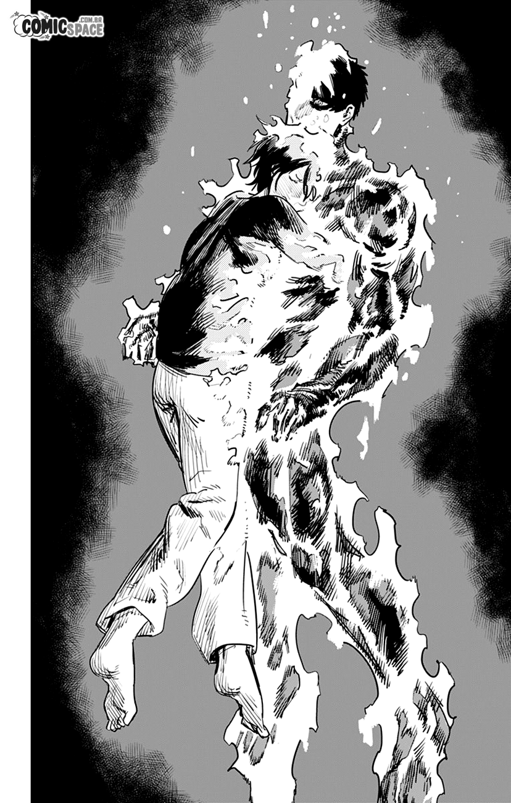
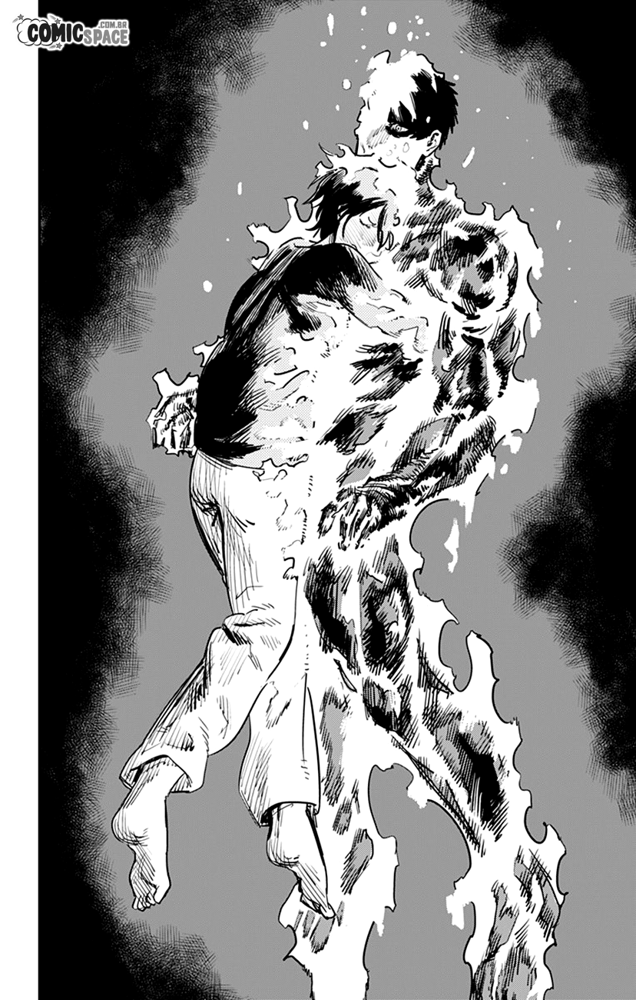

Introducción
Fire Punch es un manga de fantasía oscura y ciencia ficción creado por Tatsuki Fujimoto. Fue publicado entre abril de 2016 y enero de 2018 en la plataforma digital Shōnen Jump+ y consta de 8 volúmenes recopilatorios.

Fire Punch es un manga de fantasía oscura y ciencia ficción creado por Tatsuki Fujimoto. Fue publicado entre abril de 2016 y enero de 2018 en la plataforma digital Shōnen Jump+ y consta de 8 volúmenes recopilatorios.
